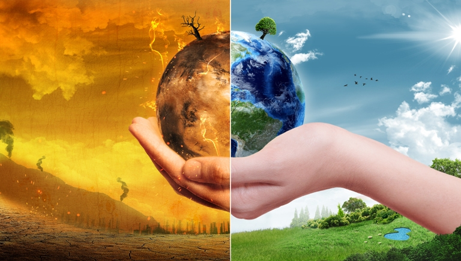

Tem como enfrentar o Aquecimento Global?
Enfrentar o aquecimento global é um dos maiores desafios atuais da humanidade. Populações de todas as áreas do planeta já lidam com as consequências desse problema, que traz um clima imprevisível e extremo, causando prejuízos enormes como a escassez de alimentos, a necessidade de deslocamento de populações e a extinção de espécies. Todas as atividades humanas – especialmente o desmatamento, a queima de combustíveis fósseis (carvão, petróleo e derivados), a agropecuária, o desperdício de alimentos e a produção de energia elétrica – geram gases de efeito estufa (GEE) na atmosfera, que causam o aquecimento global e as alterações do clima no planeta. Esse fenômeno tem piorado por causa dos atuais padrões de produção e consumo.
Ações que ajudam!
1 – Consuma menos carne, a agropecuária é a principal responsável pela emissão de gases de efeito estufa no Brasil.De acordo com o último relatório do Sistema de Estimativas de Emissões de Gases de Efeito Estufa (SEEG), mais de 70% das emissões totais do País estão ligadas à atividade, levando em consideração o desmatamento para pastagem, adubação, o metano emitido pelo gado e o transporte dos produtos.
2 – Não desperdice alimentos, o relatório do Painel Intergovernamental aponta que cerca de um terço de todo o alimento produzido no mundo é desperdiçado em algum ponto da cadeia. Minimizar essa perda traz ganhos para a segurança alimentar e ajuda na redução dos gases de efeito estufa, emitidos tanto para a produção de alimentos, como no transporte dos produtos, por exemplo.
3 – Dê preferência a produtos locais, procurar fornecedores perto de casa também é uma ótima opção para o meio ambiente. Além da conservação da natureza, isso vai fomentar a economia da região onde você mora, comprar de produtores locais ajuda a diminuir a emissão de CO2 liberado com o transporte dos produtos.
4 – Busque alternativa para o transporte, caminhar faz bem à saúde. A Organização Mundial da Saúde (OMS) recomenda 150 minutos de atividade física leve ou moderada por semana, o que equivale a cerca de 20 minutos de caminhada por dia. Por isso, nada melhor que percorrer pequenas distâncias a pé, deixando o carro na garagem. Além de queimar calorias, a escolha reduz a emissão de gases de efeito estufa e, com certeza, o aquecimento global. O uso da bicicleta também é válido.
5 – Consumo consciente, repensar o consumo excessivo de produtos ajuda a economizar e ainda contribui com o planeta. Roupas podem ser compradas em brechós ou adquiridas em novas modalidades, como aluguel ou troca de peças. Além disso, é possível investir em produtos duráveis e de melhor qualidade que podem ser usados por mais tempo. Reduzir a compra de produtos descartáveis também ajuda.
6 – Desligue a luz ao deixar um ambiente, economize energia elétrica, principalmente no período mais seco do ano, o inverno. Nessa época, chove menos e os níveis dos reservatórios de água das hidrelétricas ficam mais baixos. Quando isso acontece, é necessário acionar as usinas termoelétricas, que lançam mais gases de efeito estufa na atmosfera.